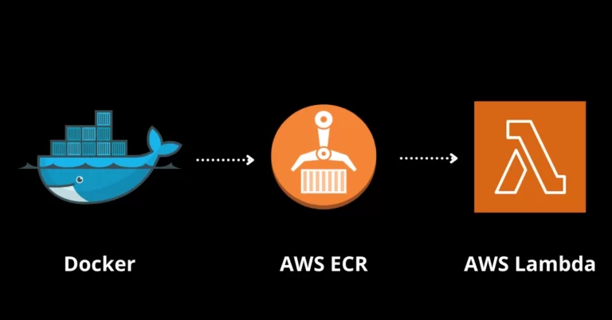

18 November 2024
Imagine needing to generate professional-grade PDFs, process files, or run complex scripts in a serverless environment. AWS Lambda’s serverless model eliminates the hassle of managing infrastructure, but it comes with its own set of limitations—particularly when your application requires access to advanced software like LaTeX. The default Lambda runtime is lightweight and lacks the tools and binaries needed for such operations, which makes deploying these applications a significant challenge.
For applications requiring binaries or software exceeding the 50 MB deployment package size limit, a different approach is needed. In this guide, we'll tackle this problem by exploring how to deploy a LaTeX-powered Lambda function using a containerized custom runtime. By packaging all necessary dependencies into a Docker image, we can overcome Lambda's runtime restrictions while ensuring our function remains scalable and easy to deploy.
I'll walk you through the step-by-step process of creating a Docker-based deployment pipeline, enabling your Lambda function to seamlessly generate PDF documents using LaTeX. Whether you're building a document generation service, report creation system, or any other application requiring binary dependencies, this guide will help you navigate the complexities of deploying Lambda functions with custom runtime requirements.
Note: Writing Python scripts to compile LaTeX files is beyond the scope of this discussion. For simplicity, this guide assumes you have a Python script that processes LaTeX documents and generates PDFs. However, If you're just starting, you can use Python's built-in subprocess module to invoke a TeX compiler for generating PDFs from LaTeX sources.
AWS Lambda functions operate within a carefully controlled environment designed for simplicity and security. While this design philosophy works well for many applications, it introduces several significant limitations:
We'll build a Docker image that bundles all the necessary LaTeX dependencies and tooling into a custom runtime environment for our Lambda function.
The key to successfully deploying a Lambda function with binary dependencies is to create a self-contained, reproducible runtime environment (A docker image). Docker is an excellent tool for this, as it allows us to package our function code, libraries, and system dependencies into a single, portable image.
Here's a high-level overview of the steps we'll take to create the Docker-based deployment:
By following this approach, we can ensure that our Lambda function has access to all the necessary components to compile LaTeX sources and generate PDFz, without relying on the default Lambda runtime environment.
After writing the image code we have to build it and push the code to aws ECR. After that, we’ll create a Lambda function and set it up to use the ECR repo as the source for the code. Here’s a detailed step-by-step guide with commands.
$ docker build -t my-latex-lambda .
$ aws ecr create-repository --repository-name my-repo
$ aws ecr get-login-password --region us-east-1 | docker login --username AWS --password-stdin
$ docker tag my-latex-lambda:latest <uri>:latest
$ docker push <uri>:latest
By following this deployment process, we can ensure that our LaTeX-powered Lambda function is packaged with all the necessary dependencies, making it easy to deploy and scale as needed.
Here's a reference implementation of the Docker image we discussed. it provides a solid foundation that you can adapt to your specific needs:
#Set the Function directory(working directory) beforehand
ARG FUNCTION_DIR="/var/task"
# This is Stage 1
FROM ubuntu:22.04 as base
# Set environment variable to prevent interactive prompts
ENV DEBIAN_FRONTEND=noninteractive
#Install Python and Latex:
RUN apt-get update && \
apt-get install -y \
perl \
wget \
tar \
gzip \
fontconfig \
texlive-latex-extra \
texlive-xetex \
texlive-latex-recommended \
python3.11 \
python3.11-venv \
python3.11-distutils \
g++ \
make \
cmake \
unzip \
libcurl4-openssl-dev && \
apt-get clean && \
rm -rf /var/lib/apt/lists/*
#Note: Font installation steps removed for brevity
#Now caomes the second stage
FROM base as pip-install
#Create virtual environtment
RUN python3.11 -m venv /venv && \
/venv/bin/pip install awslambdaric
#Here we will install awsLambdric which is the most important step
RUN /venv/bin/pip install awslambdaric
#And Here is out final stage where we copy all of out code:
FROM base
ARG FUNCTION_DIR
#Set the directory for our function code:
WORKDIR ${FUNCTION_DIR}
#Here we will copy all of our python function code:
COPY lambda_function.py ${FUNCTION_DIR}
COPY dependencies.py ${FUNCTION_DIR}
COPY requirements.txt ${FUNCTION_DIR}
#Now we will install all the python packages listed in requirements fuile
RUN /venv/bin/pip install -r requirements.txt
#Here we will set the ENTRYPOINT to use awslambdaric
ENTRYPOINT [ "/venv/bin/python3.11", "-m", "awslambdaric"]
CMD [ "lambda_function.handler" ]
Conclusion
Deploying Lambda functions with binary dependencies presents unique challenges, but Docker-based containerization offers an elegant solution. This approach provides several key benefits
Expanded Capacity: You can now package up to ~10GB of code and content in your function, eliminating the need to juggle multiple Lambda layers.
Simplified Dependencies: The containerized approach creates a self-contained, reproducible runtime environment that's easier to manage and deploy.
Flexibility: While we've focused on LaTeX in this example, this strategy works equally well for other use cases requiring custom binaries, such as:
However, it's important to note that this approach does come with some trade-offs. Larger container images can increase cold start times and impact function performance. As with any architectural decision, you'll need to balance these factors against your specific requirements.
The power of this approach lies in its versatility - once you understand how to containerize one type of binary dependency for Lambda, you can apply the same principles to virtually any other complex runtime requirement. Whether you're generating PDFs with LaTeX, processing images, or transcoding videos, the containerized Lambda pattern provides a robust foundation for your serverless applications.
This website uses cookies. Cookies are small text files stored on your device that allow us to analyze site traffic and in some cases-monitor user activity. Without cookies, certain features of the website may not function correctly.